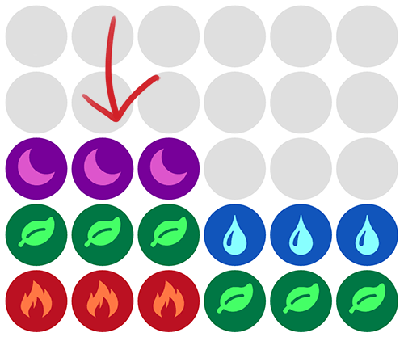
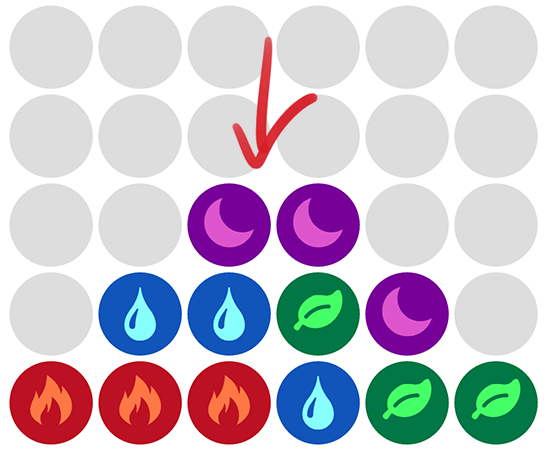

Fun with solving puzzles (and dragons)
From the end of 2012 to early 2014, I found myself enchanted (read: entrapped) by the mobile game known as Puzzles and Dragons. A deceptively simple and charming game, this post is a collection of my musings on the gameplay and design. It’s also some closure for myself so that I can finally say that I have “beaten” the game and put it to rest.
Anyways, there are really four separate posts contained within this mind dump, feel free to skip to the parts of interest to you:
- Introduction to PAD and gameplay overview
- Some PAD maths and algorithms
- PAD hacking/automation
- Thoughts on PAD’s game design
Core Gameplay
Puzzles and Dragon (or PAD for short) is a match-three puzzler from the Japanese studio GungHo entertainment. Featuring Pokemon-like collection and progression elements, it ranks among one of the most profitable apps in the world. It still pulls in around 3 million dollars daily and was the first mobile app ever to hit $1 billion dollars in revenue.1
The goal of the game is very simple: Eliminate 3 or more orbs in a row.
Matched combos on the bottom half of the game board build attack power which you use to launch attacks against cute enemy monsters shown on the top half.
But notice that there is a subtle difference in game design which sets PAD apart from other match-threes, like Candy Crush or Bejeweled. Instead of your typical swap-two-elements, a single piece in PAD can be moved an arbitrary length, displacing other pieces as it travels.
The ingenuity in this design is that it’s actually a strict superset of Bejeweled’s gameplay. It makes the game incredibly beginner-friendly, since you can still play in a very simplistic swap-two manner:
But the more you play, the more it becomes clear that the skill ceiling is actually incredibly high, as the player learns to massage the board into their desired configuration with lengthy combos:
With this simple core mechanic, PAD is able to create one of the best gameplay skill-progression tracks I have seen in any mobile game. Without the need for preprogrammed experience bars or player buff handouts, there is still an invisible but very prominent feeling of “leveling-up”. The player gains new advanced techniques, combo setups, and become more dexterous at manipulating the orbs all on their own.
And most impressive of all, this invisible progress track guides the player all the way from being a casual bejeweled player to tackling PAD’s version of ruthless World of Warcraft-like endgame raiding.
As an example, study the following hypothetical 4x3 board:
A beginner might go for one of the two easy double-combos:

A more experienced player should immediately see the path for the full four vertical combo:
Try it for yourself if you’re having trouble understanding the path. And of course these pattern identifications are much more impressive when in context of the full 5x6 board.
This incredibly high skill ceiling actually makes PAD quite entertaining to watch, as skill is so visibly demonstrable. If you don’t believe me, check out one of my favorite PAD videos, or even watch some of the official AppBank streams. A spectator may mentally plan out her own solution, only to be enlightened when a master player steps up to move the orbs. To the untrained eye, it look as if orbs are being magically expelled from the board under a ruthless finger with machine-like precision2.
Solvable Gameplay
So after one dropped orb too many, it occured to me that I should just program the computer to play PAD for me.
The way orb manipulation works makes it very similar to the classic 15-puzzle, in which you slide around numbered tiles in a grid to rearrange them into numerical order.

Roughly speaking, PAD is an MxN generalization of 15-Puzzle. The only difference is that in PAD there is no explicit “hole,” the hole is instead the tile that you are currently dragging under your finger.
Using this as a bit of scaffolding, we can break the plan of attack for “solving” PAD into 2 parts: calculate the board with the maximal score, and then calculate the shortest path to get from our current state to our desired state.
An easy way to produce the maximal scoring board is to sort all the orbs by color, and then pack groups of three starting from the bottom3.

With some handwaving, you can show you can do no better than this configuration (i.e. breaking up a group to produce a falling combo does not increase your total combo count, so there is no advantage to not packing tight adjacent groups of threes). Note of course that this doesn’t take into account the mechanic of skyfalls, that is, the additional combos scored serendiptiously from orbs refilling the board. To maximize this, you’ll want to simultaniously pack in the largest number of cascades.

Because the game refills orbs from the top each time it clears away a matched combo, having this cascade of combos means that the falling orbs are permuted several times on the way down for a statistically higher chance of matches.
A tricky question is whether we can actually get to this desired configuration. Going back to our scaffolding, consider the fact that in 15-puzzle not every board state is actually reachable! There’s a neat little theorem showing that any move in 15-puzzle preserves the parity of inversions4 – that is, the number of times a higher-numbered tile precedes a lower-numbered tile. This fact partitions the space of possible board states into two disconnected graphs: those of even parity and those of odd parity. From any board, you can reach every other board of the same parity, but never one of the other parity! This is why if you physically pull out and swap two consecutive pieces on a 15-puzzle board, the puzzle is no longer solvable.
Unlike 15-puzzle where there are 15 unique pieces however, there are only 7 unique orb colors in PAD (if you also count poison as a color). Every board therefore must have a duplicate orb somewhere, and the existence of that duplicate means you can always swap the two duplicates to “change” the parity without actually changing the state of the board. Therefore, we can show that in PAD, it is possible to achieve any desired board state – the only limitation is your skill (and time to manipulate the orbs).
So, given that we know the reachable maximal-scoring board, we just need to write a solver to get there!
Turns out this is somewhat challenging, as finding the shortest solution for 15-puzzle is NP-hard. Likewise, while figuring out the highest scoring board in PAD is reasonably easy, finding the shortest path to achieve the highest-scoring board in the alloted time is non-trivial.
Fortunately for us, we can really only do so many moves in the alloted four seconds, so a non-exhaustive depth-first search is “good enough” for all intents and purposes. Pndopt is one such app5, which lets you weight certain colors for any given situation. Like a lot of F2P games these days, the game time-gates you on the number of plays you can do in a day, so for players who are running hard dungeons, it is not unusual to input every move through pndopt to maximize chances of success – something of which I am quite guilty.
To PAD’s credit, using a computer to solve the puzzles surprisingly doesn’t ruin everything – it just removes the puzzler cornerstone and transforms the game into more of a RPG team management simulation.
Complete Computer Control
Given that most people are using computer solvers, why not just have the computer play the game entirely? Back when I was still addicted playing, I hacked up a proof of concept solver & runner and threw it up on github just for myself.
Here’s how it all works:
- Screen capture is accomplished with
idevicescreenshoton iOS andadb screencapon android. - Once the image is on the computer, the location of the 6x5 grid is calculated from the screenshot aspect ratio and then divided into 30 individual images.
- The average hue of the individual image determines the color.
- SIFT is run against a grayscale version of the image to give a list of key points, which is then matched against a list of possible orb modifiers (e.g. the plus modifiers, which give a 1.05x bonus to matches)
- Candidate combo paths are obtained via an extremely lazy DFS written in python, which runs a “multicore” solver by spawning a bunch of
pypyinstances for different regions of the board. - Solutions with a score above a certain threshold are presented to the user along with the required path. The user can then sort through the solutions by relevant parameters such as damage done or health healed.
- On android only, the chosen path can then be executed on the device via android’s
monkeyrunnertool. (I wasn’t able to figure out a way to programmatically simulate touches on iOS).
Straight Up Cheating
Of course, this is an absurd amount of work just to play a game that is entirely client-side. Turns out PAD mothership doesn’t even care about the state of the game. Sniffing the traffic shows that there are only a total of three requests made per dungeon:
sneak_dungeon- Client makes this request in order to enter a dungeon. Server responds with dungeon encounters and loot table in response.sneak_dungeon_ack- Client responds that the dungeon layout has been received and that the player is now playing. This is done in case of connectivity issues.clear_dungeon- Client responds that the dungeon is cleared. Server acknowledges, confirms the received loot, and updates the player’s account.
Note that what most people could call the “core game” is actually entirely clientside. This includes the board state, monster attacks, monster damage, player health, etc. The entirety of the player’s efforts is boiled down to either a single http request – a success request nets them the entire loot table, while a failure request leaves them with nothing.
One nice/convenient aspect of this design is that you can actually “queue” dungeons before losing connectivity. I’d often load a dungeon before entering the subway, play through it during my 10 minute commute downtown, then re-sync once I surfaced at the destination station.
Some other fun notes from packet sniffing:
- PAD to me is the best testament of the “just ship it” mentality as it appears the whole thing was written in PHP (i.e. the request is made to
sneak_dungeon.php), showing that a fancy stack isn’t necessary to build a billion dollar game. - The API endpoint to enter the dungeon
sneak_dungeonis probably an amusing mistranslation of sorts - probably originally along the lines of “to enter the dungeon discretely / carefully” - Somewhere around the 5.X series patches, they started encrypting the JSON payload so that it wasn’t easily over-the-wire sniff-able. Clever players were checking the loot-table ahead of time to determine whether a dungeon was even worth running. It’s now sent as a encoded binary base64 blob – seems like a fun and reasonably straight-forward reverse engineering project for someone’s weekend.
- Monsters are actually referred to as
cardsin all the API calls. Maybe early prototypes of the games were meant to feel more like a collectible-card game?
Design Thoughts
If you’re willing to ignore how easy it is to cheat and just play the game as it’s meant to be played, it’s actually quite an enjoyable experience. There are a lot of minor annoyances in PAD, but I think that they designed two high-level mechanics down quite well:
Resource Management
I’m not sure if the monster fusion mechanic was invented by PAD, but I find it to be a very clever bit of design. The basic gist is this: monsters are the primary form of “currency” in PAD.
- You use teams of monsters to clear dungeons
- Clearing dungeons sometimes rewards you with additional monsters
- Excess monsters can be used as a source of experience points for other monsters by “feeding” them
Often, you’ll want to save the strongest monsters or put them on your team while feeding the weaker ones away. When feeding, feeding five fodder monsters at a time is slightly more efficient than feeding one at a time. So overall, the player is encouraged to hoard monsters.
Even getting duplicate monsters is exciting as fusing duplicates together not only provides experience, but also levels up the monster’s powerful “active skill”.6
Countering the natural hoarding tendency is the concept of “Box Space,” or the total number of monsters you’re allowed to hoard at a time. Exceeding the allocated box space prevents the player from being able to enter new dungeons, forcing them to make decisions about consolidating powerful creatures together, or spending IAP purchases on box space expansions.
I find this single monster resource system to be quite elegant7, as it both simplifies the number of resources in the game, but also provides interesting decisions that players can think about in the downtime between dungeons: given a limited amount of box space, which monsters should I keep, and which ones should I feed away for experience?
Raiding
Another mechanic I really like a lot is PAD’s treatment of the end-game.
The designers were either really clever, or got really lucky, in their design of the limited-time event system. In the game, there is a list of unique “special dungeons” called “descends” which rotates every 24 hours. Each special dungeon guarantees the drop of a unique monster only if you are able to clear it on the hardest difficulty. However, specific special dungeons only come around about once a month. So if you want a particular monster, you have to train your team and plan to be ready by the dungeon date.
The whole preparation and timing feels very much like “gearing up” for a raid, as is common in other MMOs. Players will often only have two to three shots at the dungeon due to the time-gating, so they will often spend the days leading up to the descend training their monsters, reading up on the boss mechanics, and browsing the community to find friends with monsters who can help tackle the level8.
Due to the power spike granted by the newly acquired monsters from beating the descend, there’s also a natural progress of descends, just as there is often a natural raiding progression in MMOs. Often, the first real descend new players tackle is Hera,9 which provides an ability called Gravity, dealing an unconditional 30% damage to enemy monsters. Using Hera, they work their way through harder and harder stages, like Valkyrie, Goemon, eventually building a team that can tackle Zeus, Satan, and the other end-game descends.
This feeling of end-game progression complements the skill progression well, making me unsurprised that the game is still doing well after four years.
Closing
Anyways with over 500 days logged into the game, I think it’s time to put this to rest. Here’s a screenshot of my core team.
{kind=link}
{kind=link}
Farewell Karin!
I recently started using twitter more, feel free to follow me @cixelyn if you enjoy my writing. Also, special thanks to Ruwen Liu, Haitao Mao, Sam Powers, and YP Chen for reading drafts of this post.
-
And as a self-congratulatory note, I am proud to say that I managed to spend less than $100 on IAP, making this one of the best time/money sources of entertainment I have ever played. Pyrrhic victory I suppose. ↩
-
To be completely fair, there is a part of PAD that can be quite inscrutable to uninitiated viewers: intentional board stalling. The idea is that the player does not actually want to trigger a big combo because it would prematurely advance them to the next part of the level before all their special abilities are charged. So they make a calculated (and often short) move that makes only a single match, while still manipulating the overall board layout to trigger a big combo later. ↩
-
This is of course for the very basic case where you have a rainbow colored team which each member of equal power. The analysis is much more nuanced if you care about a non-uniform team (i.e. you’re stuck with an integer linear programming problem). For those that care, the basic damage formula is $$ (1+\frac{combos-1}{4}) \cdot \sum_{n=0}^{combos} \mathrm{attack}(n)\cdot(1 +\frac{orbs(n)-3}{4}) $$where combos is the total number of combos, attack(n) is the total monster attack power of combon, and orbs(n) is the total number of orbs in combon. Throw in board modifiers, monster multipliers, and a whole host of other powerups, and the calculation becomes really messy. ↩
-
For the general MxN puzzle, any transposition will preserve the invariant N mod 2, where N is the number of inversions plus the row number of the empty square. For a more thorough treatment, see the excellent resource at Interactive Mathematics Miscellany and Puzzles. ↩
-
If you do use Pndopt, I find their default
MAX_SOLUTIONS_COUNTa bit too low. Open the console and bump the variable to something reasonable like 20,000. ↩ -
Each monster may have up to one active skill, which is a player-activated ability that provides some sort of positive benefit during battles. “Orb Changers” are the most sought-after active skill as they typically convert all orbs of one color to another, serving as play-makers for difficult board situations. Leveling up a skill reduces the skill’s cooldown timer, allowing the player to use it more frequently in battle. ↩
-
To be completely fair, PAD actually has a secondary resource called “gold” which I find quite inelegant. Except very early on in the game, you never run out of gold, making it a non-resource. I think the designers realized this mistake and started adding gold sinks in the form of purchasable dungeons around the 6.0 patch. ↩
-
When battling a dungeon, you provide one leader and four team members. You also have the option of using a friend’s monster, who serves as the team’s second leader. Leader monsters give huge team buffs, so having a roster of strong friends is paramount to fielding an overall strong team. Many higher-level players will often lend their monsters to beginners during the big descend days. Common places to look for specific friends include /r/puzzleanddragons and puzzledragonx’s friend finder. ↩
-
I know this isn’t entirely the case as Hera was bumped to a normal dungeon now, but it was true throughout over half of PAD’s life and the entirety of my PAD career. ↩